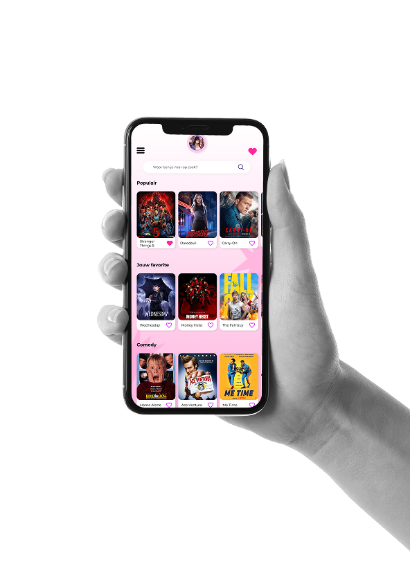
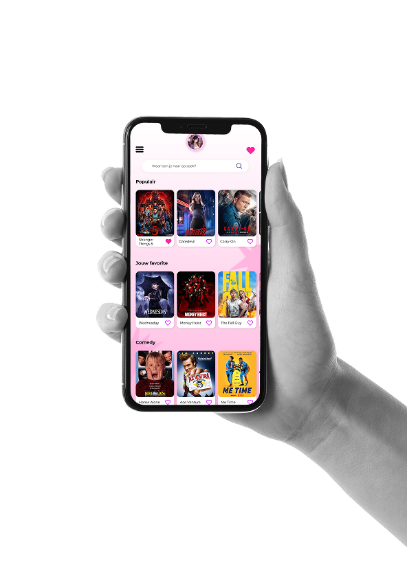

Leila Dryhailo
PORTFOLIO
een UX/UI-designstudent met een passie voor visuele storytelling en het creëren van duidelijke, doordachte interfaces.
Ik koos voor Digital Design omdat ik geïnteresseerd ben in hoe design de perceptie en het gedrag van gebruikers beïnvloedt.
PXL Hasselt — Digital Design
Kharkiv National University of Economics — Marketing
Oekraïens · Russisch · Nederlands · Engels · Frans
Ik hecht veel waarde aan een duidelijk en rustig werkproces. Ik werk gestructureerd, let sterk op details en houd altijd rekening met de behoeften van de gebruiker. Daarnaast sta ik open voor communicatie en feedback, wat bijdraagt aan het creëren van doordachte en goed uitgebalanceerde oplossingen.
Dit project is een persoonlijk dashboardconcept dat werd ontwikkeld tijdens de Werkplekkeren (WPL1) cursus. Het doel was om een duidelijke en visueel aantrekkelijke interface te ontwerpen die mijn leerproces, vaardigheden en lopende projecten als UX/UI-designstudent weerspiegelt.

Ik was verantwoordelijk voor het volledige projectproces — van onderzoek en het verzamelen van feedback tot wireframing, het bepalen van de informatiestructuur en het uiteindelijke visuele ontwerp.

Dit project hielp mij beter te begrijpen hoe complexe informatie gestructureerd kan worden en hoe ideeën vertaald kunnen worden naar een duidelijke interface.
Dit project is een concept voor een applicatie waar gebruikers films en series kunnen ontdekken, delen, beoordelen en opslaan. Het project werd ontwikkeld tijdens de UI Design cursus en focust op content discovery en sociale interactie.
 

Ik was verantwoordelijk voor het volledige ontwerpproces van dit project.
Dit project hielp mij beter te begrijpen hoe complexe applicaties ontworpen kunnen worden voor zowel mobiele als desktopplatformen met focus op gebruiksvriendelijkheid.
Deze visuele werken vormen een klein onderdeel van mijn persoonlijke creatieve praktijk, die ik ontwikkel sinds mijn 14e. Ze ontstaan vanuit een intrinsieke interesse in beeld, compositie en sfeer en zijn niet gekoppeld aan een specifieke opdracht of briefing. Voor mij zijn dit geen losse beelden, maar een manier om visueel te denken en te werken met vorm en gevoel.
Alle getoonde visuals zijn volledig zelfstandig door mij gemaakt. Ik was verantwoordelijk voor het volledige creatieve proces: van conceptvorming en beeldselectie tot compositie, styling en finale visuele afwerking.

Door deze persoonlijke praktijk heb ik een sterk gevoel ontwikkeld voor compositie, kleurgebruik, contrast en visuele hiërarchie. Deze vaardigheden vormen de basis van mijn werk als UX/UI-designer en beïnvloeden hoe ik interfaces ontwerp, structuur aanbreng en visuele helderheid creëer.